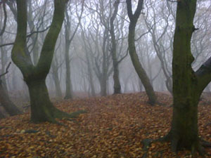
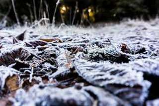

Franklin's Local Weather Page
"Where we always have your weather needs covered!"
☰
Home
Franklin
Greenville
Springfield
Storm Center
Gallery
A Sunny Day In Franklin
Franklin Bird Watching
Record Snow Fall for Franklin
Spring Day In Franklin
2014 Mist Up Around Franklin Park 
Winter Is Coming To Franklin